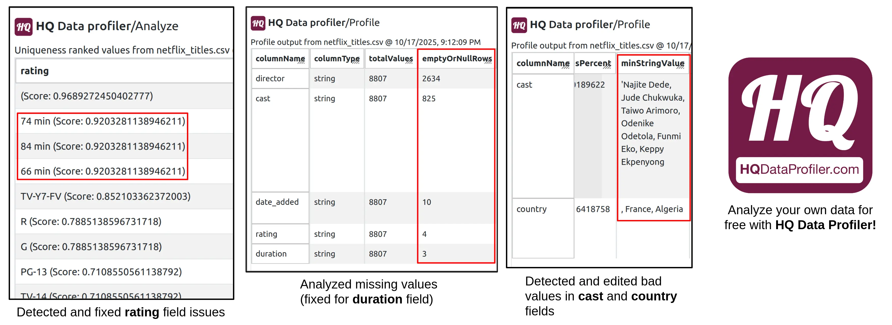
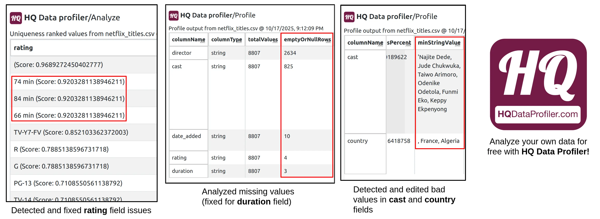

See how HQ Data Profiler makes it easy to rapidly analyze and improve datasets:
The "Netflix Movies and TV Shows" dataset (https://www.kaggle.com/datasets/shivamb/netflix-shows) is a popular Kaggle dataset with over 3M views and 674K downloads. It is a tabular dataset (CSV) that lists all movies and TV shows on Netflix. Fields in the dataset include "director", "title", "ratings", "release year", "duration", and more.
Using HQ Data Profiler, data quality issues in the dataset were identified and addressed:
 In particular:
 In particular:
Rating field bad values: The "rating" field is mostly populated with values such as "TV-MA", "PG-13", and other valid ratings. In the original dataset, bad values such as "66 min", "74 min", and "84 min" were also found as values for this field. These values were actually missing from the "duration" field, which was empty for the corresponding rows. Using HQ Data Profiler's outlier detection feature, these invalid values were easily detected and moved to their proper field.
Director field misleading title: The "director" field has many values containing comma separated names of multiple directors who worked on a show. This was easily detected again with HQ Data Profiler's outlier detection feature. The field was renamed to "directors".
Country field misleading title: The "country" field has many values listing multiple comma separated countries where a show was created. This was easily detected again with HQ Data Profiler's outlier detection feature. The field was renamed to "countries".
Bad values: The "cast" field had a value starting with a "'" character which was never closed and the "country" field had multiple values starting with a "," character. These were detected with HQ Data Profiler's comprehensive profile and fixed.
Missing values: HQ Data Profiler's comprehensive profile reveals 3 empty values in the "duration" field (fixed by moving the values from the "rating" field as described earlier), 4 empty values in the "rating" field, 10 empty values in the "date_added" field, 821 empty values in the "country" field, 825 empty values in the "cast" field, and 2634 empty values in the "director" field. The empty values in all field other than "duration" were not addressed.
See for yourself: Visit the improved dataset, published by HQ Data Profiler on Kaggle: https://www.kaggle.com/datasets/hqdataprofiler/cleaned-netflix-movies-and-tv-shows!
Director field misleading title: The "director" field has many values containing comma separated names of multiple directors who worked on a show. This was easily detected again with HQ Data Profiler's outlier detection feature. The field was renamed to "directors".
Country field misleading title: The "country" field has many values listing multiple comma separated countries where a show was created. This was easily detected again with HQ Data Profiler's outlier detection feature. The field was renamed to "countries".
Bad values: The "cast" field had a value starting with a "'" character which was never closed and the "country" field had multiple values starting with a "," character. These were detected with HQ Data Profiler's comprehensive profile and fixed.
Missing values: HQ Data Profiler's comprehensive profile reveals 3 empty values in the "duration" field (fixed by moving the values from the "rating" field as described earlier), 4 empty values in the "rating" field, 10 empty values in the "date_added" field, 821 empty values in the "country" field, 825 empty values in the "cast" field, and 2634 empty values in the "director" field. The empty values in all field other than "duration" were not addressed.
See for yourself: Visit the improved dataset, published by HQ Data Profiler on Kaggle: https://www.kaggle.com/datasets/hqdataprofiler/cleaned-netflix-movies-and-tv-shows!